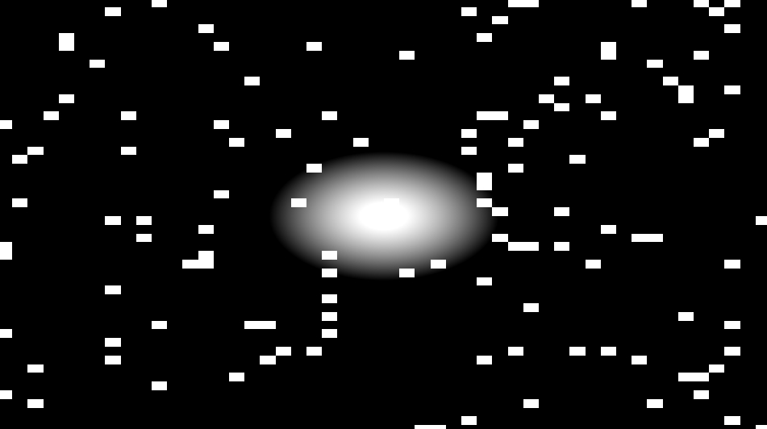

I use shadertoy to create the first 7 effects
Use shader from p5.js to create the last 7 effects
1st.

float rand(vec2 co){
return fract(sin(dot(co.xy, vec2(12.9898, 78.233))) * 43758.5453);
}
void mainImage( out vec4 fragColor, in vec2 fragCoord )
{
vec2 uv = fragCoord/iResolution.xy;
float rainSpeed = 2.0;
float rainSize = 0.02;
vec2 rainPos = uv * vec2(40.0, 25.0) + vec2(0.0, iTime * rainSpeed);
float n = rand(floor(rainPos));
float visibility = smoothstep(rainSize, rainSize + 0.01, n);
vec3 bgColor = vec3(0.05, 0.05, 0.1);
vec3 rainColor = vec3(0.6, 0.6, 0.7);
vec3 color = mix(bgColor, rainColor, visibility);
fragColor = vec4(color, 1.0);
}
2nd.
void mainImage(out vec4 fragColor, in vec2 fragCoord) {
vec2 uv = (fragCoord - 0.5 * iResolution.xy) / iResolution.y;
float dist = length(uv);
float ripple = sin(dist * 10.0 - iTime * 2.0) * 0.5 + 0.5;
float minColor = 0.2;
vec3 color = vec3(minColor + ripple * 0.5, minColor + ripple * 0.3, minColor + ripple);
fragColor = vec4(color, 1.0);
}
3rd.

float rand(vec2 co) {
return fract(sin(dot(co.xy, vec2(12.9898, 78.233))) * 43758.5453);
}
vec3 starrySky(vec2 uv) {
float n = rand(floor(uv * 50.0));
return vec3(n > 0.95);
}
vec3 shootingStar(vec2 uv, float time) {
vec2 p = uv + vec2(-0.5, -0.5);
float len = length(p);
float star = max(0.0, 1.0 - len * 10.0 + sin(time + len * 10.0) * 0.5);
return vec3(star);
}
void mainImage(out vec4 fragColor, in vec2 fragCoord) {
vec2 uv = fragCoord/iResolution.xy;
vec3 color = starrySky(uv);
color += shootingStar(uv, iTime);
fragColor = vec4(color, 1.0);
}
4th.
5th.
6th.
7th.
8th.
9th.
10th.
11th.
12th.